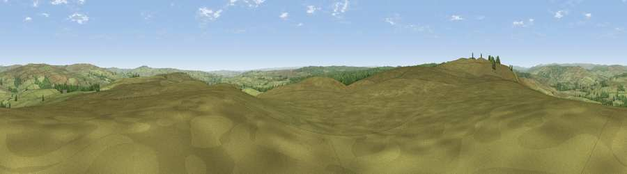

Viewpoint near Bellingham
#11821 in England · top 28% of its area beats it · near BellinghamWhere it is
The exact computed spot (NY 80125 82175). Click the marker for map links.
The view, rendered

A 360° render of this exact spot computed from the terrain model, tree cover and land cover — summer colours, afternoon light, calibrated against photographs of famous viewpoints. Real trees, hedges and buildings will differ in detail.
The panorama
Grey silhouette: terrain skyline in each direction (720 bearings, Earth curvature and refraction included). Dashed green: skyline with trees (+15 m) and buildings (+8 m) as obstacles. Blue strip: how far the ground is visible on each bearing.
Where the view opens
Wedge length = distance to the farthest visible ground on that bearing (vegetation-aware). Rings at 10, 25 and 50 km.
What fills the view
90% grassland · 9% woodland
Angular shares of the visible panorama (visual magnitude), not map area. Landscape diversity 0.15 (0–1 Shannon).
Key numbers
More beautiful places nearby
The staircase of upgrades: each row has a higher view potential than everything closer. Driving times are estimates from straight-line distance, calibrated against real road routing — check an actual route before setting out.
| Place | Direction | Drive | Score |
|---|---|---|---|
| Viewpoint near Greenhaugh | W · 1 km | ~4 min | 71.2 |
| Padon Hill | N · 11 km | ~21 min | 72.6 |
| Viewpoint near West Woodburn | E · 12 km | ~23 min | 73.4 |
| Blackman's Law | NNW · 17 km | ~29 min | 74.1 |
| Monkside | NW · 17 km | ~30 min | 78.4 |
| Viewpoint near Bewcastle | W · 22 km | ~36 min | 78.9 |
| Viewpoint c11644_7156 | W · 22 km | ~37 min | 80.8 |
| Viewpoint c11995_7247 | NW · 25 km | ~41 min | 82.1 |
55.13354, -2.31327 · source: screening · position refined by local search. Computed location — check access rights before visiting.